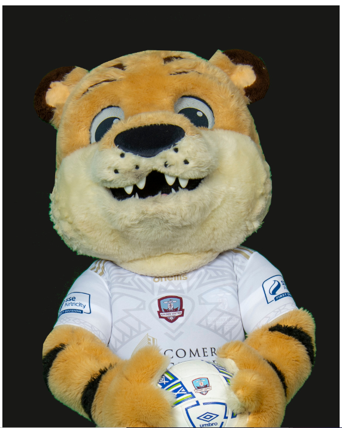

Working on Bonus
Mascot
Galway Tiger
The Galway Tiger is Official team Mascot of Galway United FC. Favourite things: running on walls,
high fives, big head selfies, my fans, Galway United Football.
Fun Facts
Galway Tigers have some of the softest wool
One of feature is its short Neck
Tiger with smily face

Go to Previous Page